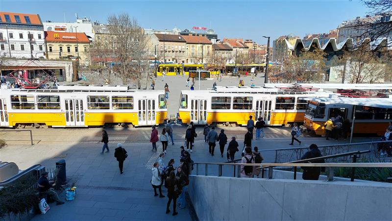
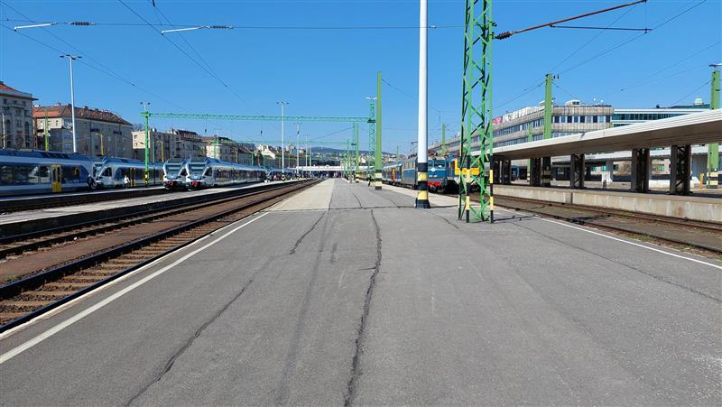

Tömegközlekedés működése
Busz
A busz az egyik leggyakoribb tömegközlekedési forma, amelynek legnagyobb előnye a rugalmasság. Mivel közúton halad, nem igényel külön infrastruktúrát, mint például síneket vagy alagutakat. Ez lehetővé teszi, hogy a város legkülönfélébb pontjait is kiszolgálja, beleértve a külvárosi területeket is. A modern buszok gyakran alacsonypadlósak, klímával felszereltek, sőt egyre több helyen elektromos vagy hibrid meghajtásúak, így környezetbarátabbak, mint korábban. Ugyanakkor a buszok legnagyobb hátránya éppen az, hogy a közúti forgalomnak alárendelten közlekednek. Ez dugók esetén jelentős késéseket okozhat. Emellett, ha nem áll rendelkezésre buszsáv, akkor a menetidő kiszámíthatatlanná válhat. A csúcsidőszakban gyakori a zsúfoltság, ami rontja az utazási élményt.
Villamos
A villamos különösen Európában, így Budapesten is jelentős szerepet tölt be a városi közlekedésben. Elektromos meghajtása miatt csendes és környezetbarát, ráadásul nagyobb kapacitással rendelkezik, mint a busz, és ha elkülönített pályán halad, akkor a forgalmi dugókat is kikerüli. A modern alacsonypadlós járművek ráadásul akadálymentesek, így idősek és mozgáskorlátozottak is könnyen használhatják őket. Ugyanakkor a villamos is kötött pályán halad, és ha baleset vagy műszaki hiba történik az útvonalon, az az egész vonalat leállíthatja. Emellett a sínek karbantartása időigényes és költséges, és a közúti forgalomban való részvétel miatt nem mindig tudja elkerülni a forgalmi akadályokat.
Metró
A metró az egyik legmegbízhatóbb és leggyorsabb közlekedési forma a nagyvárosok belső területein. Mivel a föld alatt halad, független a felszíni forgalomtól, így a menetrendet kevésbé zavarják külső tényezők. A metrók sűrűn indulnak, nagy kapacitással rendelkeznek, ezért rendkívül hatékonyak a városi tömegek mozgatásában. A metró legnagyobb hátránya a rendkívül magas beruházási költség. Az alagutak, állomások, szellőzőrendszerek és biztonsági berendezések kiépítése hosszú évekig tarthat. Emellett kevésbé rugalmas, mint más felszíni közlekedési eszközök, és a föld alatti közlekedés sokak számára kellemetlen is lehet, különösen zsúfolt időszakokban.
Vonat
A vonat, legyen szó elővárosi HÉV-ről vagy távolsági gyorsvonatról, a nagy távolságok megtételére legalkalmasabb közlekedési forma. A vasúti közlekedés jellemzője, hogy nagy sebességgel, viszonylag kevés megállóval visz el az egyik pontból a másikba, miközben környezetkímélőbb is, ha villamosított pályán közlekedik. Az elővárosi vasutak fontos szerepet játszanak a város és az agglomeráció összekapcsolásában. Hátránya azonban, hogy nem túl rugalmas: a vonatok kötött pályán haladnak, és az új vasútvonalak kiépítése rendkívül költséges és időigényes. Egyes területek így vasúttal egyáltalán nem elérhetők. Emellett előfordulhatnak menetrendi késések, főleg ha a pálya elavult vagy túlterhelt.